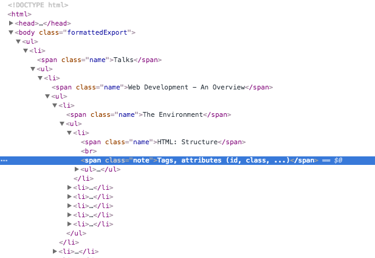
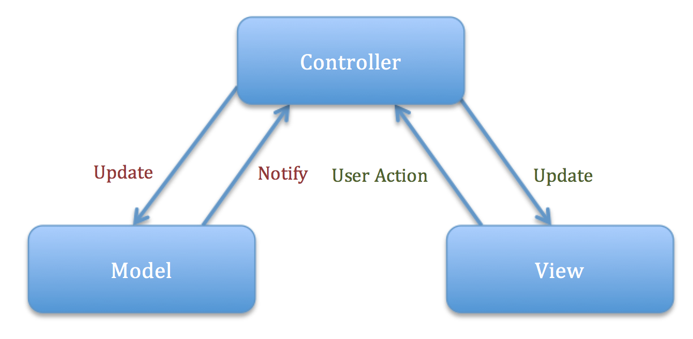

class: center, middle, cover ## Web Development - An Overview #### Ashutosh Sharma ##### .sec[Sr Computer Scientist | Adobe] --- # Agenda * The Environment * HTML DOM * Commonly used HTML tags * Supported by practically all browsers * Server-side vs Client-side rendering * HTML5 * SVG, Canvas * CSS3 * Extending CSS * JavaScript * Debugging * Testing * Web-based interactive editor demo * Further reading --- # The Environment * HTML: Structure * Tags, attributes, (id, class, ...) ```html <div id='app'> <img class='logo' src='logo.jpg'> </div> ``` * JS: Logic ```html <button onclick='alert("clicked!")'>Click me</button> ``` * CSS: Styling ```css .logo { width: 100px; } ``` * Including JS and CSS * External: <script>, <link rel='stylesheet'> tags * Inline: <script>, <style>> tags, as attributes --- # Host environment * Rendering and execution environment, including the host JS API * e.g. alert, XMLHttpRequest * Common hosts * Browser * Webview * Application (e.g. using CEF) * Browser differences ```css button { -webkit-border-radius: 4px; -moz-border-radius: 4px; border-radius: 4px; } ``` --- # Environment restrictions * JS disabled * Mixing HTTP/HTTPS resources * Cross-domain AJAX calls (CORS: cross origin resource sharing) * Whitelisted sources (content, scripts, fonts, images, ...) --- # HTML DOM * API to work with a tree structure (that represents the web page)  --- # HTML DOM * Interactivity through DOM manipulation * Selection/navigation/traversal ```javascript var el = document.getElementById('app'); ``` * Manipulation * Add/delete elements, change attributes ```javascript el.appendChild(document.createElement('hr')); ``` * Performance implications --- # Commonly used HTML tags Supported by practically all browsers * a, link * img * div, span * ul, ol, li * h1 .. h6 * form, input, select, option, button, label * table, tr, th, td * iframe, object * b, u, i, font * <!-- --> * style, script, meta --- ### Server-side vs Client-side rendering * Where is the HTML generated? * Server * As part of the web page served from the server * Client * Constructed through JS by using the DOM API in the browser * Both can be dynamic --- # Client-side rendering * Only data is sent from the server, rather than HTML * Templating * Separating HTML structure from content. * Some engines support logic and loops. * Popular engines * mustache.js ```javascript <script id="template" type="x-tmpl-mustache"> <p>Use the <strong>{{power}}</strong>, {{name}}!</p> </script> ``` * handlebars.js * underscore.js --- # MVC frameworks * Help in building full-fledged (single-page) web applications in JS  * Large number of MVC frameworks --- # MVC frameworks * Differences in: * features * syntax (e.g. domain specific language using AngularJS) * browser support (e.g. KnockoutJS supports even IE 6!) * opinionated (e.g. EmberJS) vs not (e.g. BackboneJS) * support for addons * performance (e.g. ReactJS) * Sample code: http://todomvc.com/ --- # HTML5 * Latest HTML specification * New elements * Better structure/semantics * section, article, main, aside, header, footer, nav, figure, template * Media * video, audio (including API), track * Form fields/widgets * progress, meter, input types (tel, search, url, email, date, time number, range, color) * SVG * Embed SVG fragments in HTML * Canvas * rendering dynamic bitmaps (e.g. graphs, games) --- # HTML5 * New attributes * Form fields-related * autofocus, placeholder, form, constraints (e.g. min, max, required) * Script: async * contenteditable * Editable element * data-* * user-defined attributes * role, aria-* * instruct assistive technology --- # HTML5 * Made obsolete * Better handled by CSS * Tags: big, center, font, strike, tt * Attributes: bgcolor, cellpadding, ... (on table), background (on body), ... * Usability and accessibility issues * frame, frameset * Others: acronym, applet, ... --- # HTML5 * New APIs * Media playback and syncronization (video, audio) * Form constraint validation * Offline web applications (application cache) * Editing * History * Web storage * Web workers * Run scripts in background threads * Websockets * bidirectional communication * Browser support * http://caniuse.com/ --- # SVG * XML-based image format for 2d vector based graphics * Can be created/modified using JS * Can be animated * Styling can be controlled through CSS * Good browser support --- # Canvas * Generate graphics using JS * Real time video processing and rendering * Work in 2D and 3D (WebGL) * Debugging support in Chrome devtools * Good browser support (2D) --- # CSS3 * Latest CSS specifications and recommendations * CSS3 modules * New selectors:nth-child * e.g. [foo*="bar"], :nth-child, ... * Flexible box model * centering, filling available space * Backgrounds and Borders * background tiling, blipping, positioning; image-based borders; drop-shadow * Text * indent, overflow wrapping, tab-size, text-transform, shadow * 2D/3D Transformations * translate, rotate, scale, perspective --- # CSS3 * CSS3 Modules * Transitions, Animations * Smooth transition from one state to another; animations for more complex series of movements (keyframes, play-state, ...) * Fonts * Custom fonts (not installed on the system), unique look and feel * Multi-Column Layout * count, width, gap, overflow, ... * Media queries * Responsive design; different styling based on media features (type, width, height, orientation, aspect-ratio, resolution/dpi, ...) * media="screen, 3d-glasses, print and resolution > 90dpi" * Browser support * http://caniuse.com/ --- # Extending CSS * CSS Preprocessors * Nested rules, variables, mixins, functions, selector inheritance, ... * Popular CSS Preprocessors * SASS * LESS ```css .transition (@prop: all, @time: 1s, @ease: linear) { -webkit-transition: @prop @time @ease; -moz-transition: @prop @time @ease; -o-transition: @prop @time @ease; -ms-transition: @prop @time @ease; transition: @prop @time @ease; } #somediv { .transition(all, 0.5s, ease-in); &:hover { opacity: 0; } } ``` --- # CSS frameworks Provide reusable patterns and a common structure * Functionality * Responsive design * Grid creation * CSS reset * Consistent styling for web page components * Theming * Icons * Useful components (include JS) * tooltip, accordion, carousel * CSS helper classes * float-left, hide --- # CSS frameworks * Popular CSS Frameworks * Bootstrap * IE8+, LESS/SASS, grid, mobile first, themes, components, aria attributes/roles * Components: button dropdown, button bar, tabs, navbar, breadcrumbs, pagination, ... * Foundation * IE9+, SASS, mobile first, aria attributes/roles, animation library, components * Components: pagination, sticky nav, multi-level accordion, ... * Blueprint * IE7+, flexible grid, css reset, print styles * 960.gs * grid system --- # JavaScript * Dynamic, untyped, interpreted * Supports OO, imperative and functional programming * Restrictions by the host environment * No access to local filesystem in the browser * Single threaded * Shared with the UI thread; web workers --- # JavaScript * Modules, dependency resolution * No built-in module system in JS * Module systems * encapsulation, module interface, dependency resolution * Popular module systems * AMD * CommonJS --- # JavaScript * Useful libraries * jQuery - DOM manipulation, event handling, AJAX, eliminate browser differences, plugins (e.g. cookie handling, modal windows, ...) * Modernizr - feature detection * Underscore, Lodash - utility functions * jQuery UI - interactions, effects, widgets, theming * RequireJS - modules, dependency * UglifyJS - minification * Moment - date manipulation * D3 - Visualization * SVG --- # JavaScript * ECMAScript 6 * Latest version of the ECMAScript standard * Significant update to the language (since ES5 standardization in 2009) * ES6 Features * Classes * Modules * let, const: block scoping, single assignment * Iterators, Generators: lazy evaluation * Symbols: new data type, unique id * Promises: easier async programming * Template strings: string interpolation, easier string construction * Proxies: define custom behavior for object ops, profiling/logging * Subclassable built-ins: Array, Date, DOM elements * ... --- # JavaScript * Cross-compilation * Many ES6-like features * CoffeeScript (and forks) * syntax improvements, readability * Dart, by Google * static typing * TypeScript, by Microsoft * static typing * JSX, by Facebook * language extension (represent HTML elements in React) * GWT, by Google * write client-side apps in Java and deploy them as JS --- # Debugging * Devtools * Firebug * F12 Developer tools * Proxies * Fiddler * Charles * MVC framework-specific extensions * Batarang * Rect developer tools * Backbone debugger * [demo] --- # Testing * Unit testing * Headless browsers * PhantomJS, node-webkit * Testing frameworks * Jasmine, QUnit, Mocha * Automation * Selenium webdriver * Selenium grid --- class: center, middle ## Web-based interactive editor ### .sec[[demo]] --- # Further reading * [Web development landscape](http://notwebsafe.com/presos/web-hipster/index-dev.html#/) * [Web design landscape](http://notwebsafe.com/presos/web-hipster/index-design.html#/) * [Web Platform docs](https://www.webplatform.org/) * [CSS-related blog (css-tricks.com)](https://css-tricks.com/) * Online editors: [JSFiddle](http://jsfiddle.net), [CodePen](http://codepen.io) * [More links](https://wiki.corp.adobe.com/pages/viewpage.action?spaceKey=brackets&title=HTML,+CSS,+and+JavaScript+Learning+Resources) <hr> * This talk, on a single page: [bit.do/webdev-sp](http://bit.do/webdev-sp) --- class: center, middle # Questions